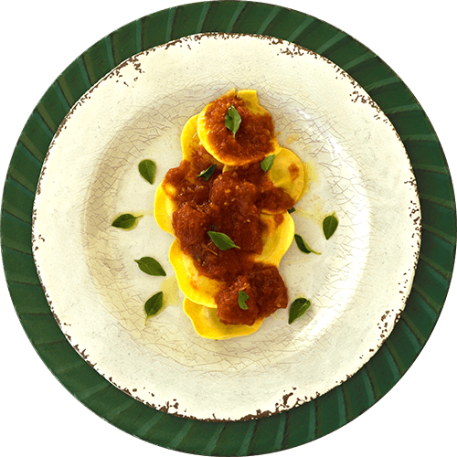

A Empresa
Sabe aquele cheirinho gostoso de comida da casa da vó?
Que tal reviver essas memórias conosco? A Amaddre fabrica produtos de
altíssima qualidade, especialmente desenvolvidos por uma Cientista de
Alimentos. Com toda tecnologia necessária, desenvolvemos produtos sem
adição de conservantes e com uma data de validade longa.
Nossos produtos são fabricados de maneira artesanal, mas dentro de uma
indústria com toda infraestrutura e segurança necessária, garantindo alta
capacidade produtiva.
Por falar nisso, desenvolvemos marcas próprias, com produtos
customizados para atender seu público alvo, esbanjando na qualidade e no
sabor. Enfim, te convidamos a conhecer mais sobre a Amaddre, um jeito
diferente de temperar a vida a gosto (e com muito gosto)!
